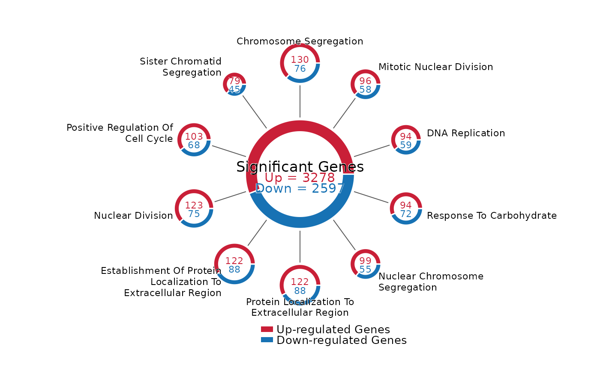

Draw a Ferris wheel-style donut plot for up/down counts across pathways or other categories. The center donut shows the total counts, and outer donuts show category-level counts with radius scaled by category size.
Usage
FerrisWheelPlot(
data = NULL,
res = NULL,
label_col = "pathway",
up_col = "up",
down_col = "down",
total_up = NULL,
total_down = NULL,
de_results = NULL,
term_col = "Description",
group_col = "Groups",
count_col = "Count",
padj_col = "p.adjust",
up_group = "Up",
down_group = "Down",
padj_cutoff = 0.05,
top_n = 10,
up_label = "Up-regulated Genes",
down_label = "Down-regulated Genes",
up_color = NULL,
down_color = NULL,
palette = "Chinese",
palcolor = NULL,
center_label = "Significant Genes",
center_radius = 1.25,
center_width = 0.28,
outer_distance = 2.55,
outer_width = 0.12,
min_outer_radius = 0.28,
max_outer_radius = 0.48,
label_wrap = 26,
label_case = c("title", "none"),
label.stroke = 0.2,
label.stroke.color = "white",
label.size = 3,
number.size = 3,
center.size = 4.5,
legend.size = 3.5,
line.color = "grey35",
line.linewidth = 0.35,
legend.position = c("bottom", "none"),
direction = 1,
start = pi/2,
theme_use = "theme_scop",
theme_args = list()
)Arguments
- data
A
data.framecontaining category labels and two non-negative count columns. IfNULL, the table is built fromres.- res
A result list returned by
RunEnrichment()or an enrichmentdata.frame. When provided,FerrisWheelPlot()summarizes enriched terms into up/down counts internally.- label_col
Column name for category labels. Default is
"pathway".- up_col
Column name for up-regulated counts. Default is
"up".- down_col
Column name for down-regulated counts. Default is
"down".- total_up, total_down
Total counts shown in the center donut. When
NULL, the corresponding column sum is used. For enrichment input, these can be inferred fromde_results.- de_results
Optional differential expression result table used to infer
total_upandtotal_downfromavg_log2FC.- term_col, group_col, count_col, padj_col
Column names used when
resis an enrichment result. Defaults matchRunEnrichment()output.- up_group, down_group
Group labels in enrichment results. Default matches examples that use
"Up"and"Down"asgeneID_groups.- padj_cutoff
Adjusted p-value cutoff used to select enriched terms from
res.- top_n
Number of enriched terms to show when
resis provided. Default is10.- up_label, down_label
Legend labels and center text labels. Defaults are
"Up-regulated Genes"and"Down-regulated Genes".- up_color, down_color
Optional colors for up/down counts. When
NULL, colors are selected from the"Chinese"palette used byscop.- palette, palcolor
Palette passed to
thisplot::palette_colors()whenup_colorordown_coloris not provided.- center_label
Text shown inside the center donut. Default is
"Significant Genes".- center_radius
Radius of the center donut. Default is
1.25.- center_width
Width of the center donut band. Default is
0.28.- outer_distance
Distance from plot center to outer donut centers. Default is
2.55.- outer_width
Width of outer donut bands. Default is
0.12.- min_outer_radius, max_outer_radius
Minimum and maximum outer donut radii after scaling by category count.
- label_wrap
Maximum characters per category label line. Set
NULLto disable wrapping.- label_case
Label case for category names.
"title"capitalizes words by default;"none"keeps labels unchanged.- label.stroke
White outline width around text labels. Default is
0.1. Set0to disable the outline.- label.stroke.color
Outline color for text labels.
- label.size, number.size, center.size, legend.size
Text sizes.
- line.color, line.linewidth
Connector line styling.
- legend.position
Position of the compact legend. Use
"bottom"or"none".- direction
Drawing direction for the outer donuts.
1is clockwise and-1is counterclockwise.- start
Start angle in radians for the first category. Default is
pi / 2.- theme_use
Theme function name. Default is
"theme_scop".- theme_args
Additional arguments passed to
theme_use.
Examples
data(pancreas_sub)
pancreas_sub <- standard_scop(pancreas_sub)
#> ℹ [2026-06-28 09:48:43] Start standard processing workflow...
#> ℹ [2026-06-28 09:48:44] Checking a list of <Seurat>...
#> ! [2026-06-28 09:48:44] Data 1/1 of the `srt_list` is "unknown"
#> ℹ [2026-06-28 09:48:44] Perform `NormalizeData()` with `normalization.method = 'LogNormalize'` on 1/1 of `srt_list`...
#> ℹ [2026-06-28 09:48:44] Perform `FindVariableFeatures()` on 1/1 of `srt_list`...
#> ℹ [2026-06-28 09:48:44] Use the separate HVF from `srt_list`
#> ℹ [2026-06-28 09:48:44] Number of available HVF: 2000
#> ℹ [2026-06-28 09:48:44] Finished check
#> ℹ [2026-06-28 09:48:44] Perform `ScaleData()`
#> ℹ [2026-06-28 09:48:44] Perform pca linear dimension reduction
#> ℹ [2026-06-28 09:48:45] Use stored estimated dimensions 1:23 for Standardpca
#> ℹ [2026-06-28 09:48:45] Perform `Seurat::FindClusters()` with `cluster_algorithm = 'louvain'` and `cluster_resolution = 0.6`
#> ℹ [2026-06-28 09:48:45] Reorder clusters...
#> ℹ [2026-06-28 09:48:45] Skip `log1p()` because `layer = data` is not "counts"
#> ℹ [2026-06-28 09:48:45] Perform umap nonlinear dimension reduction
#> ✔ [2026-06-28 09:48:51] Standard processing workflow completed
pancreas_sub <- RunDEtest(
pancreas_sub,
group.by = "CellType",
only.pos = FALSE
)
#> ℹ [2026-06-28 09:48:51] Data type is log-normalized
#> ℹ [2026-06-28 09:48:51] Start differential expression test
#> ℹ [2026-06-28 09:48:51] Find all markers(wilcox) among [1] 5 groups...
#> ℹ [2026-06-28 09:48:51] Using 1 core
#> ⠙ [2026-06-28 09:48:51] Running for Ductal [1/5] ■■ 20% | ETA: 0s
#> ✔ [2026-06-28 09:48:51] Completed 5 tasks in 504ms
#>
#> ℹ [2026-06-28 09:48:51] Building results
#> ✔ [2026-06-28 09:48:52] Differential expression test completed
de_df <- pancreas_sub@tools$DEtest_CellType$AllMarkers_wilcox
de_df <- de_df[
de_df$p_val_adj < 0.05 & abs(de_df$avg_log2FC) > 0.25,
,
drop = FALSE
]
de_df$direction <- ifelse(de_df$avg_log2FC > 0, "Up", "Down")
enrich_out <- RunEnrichment(
geneID = de_df$gene,
geneID_groups = de_df$direction,
db = "GO_BP",
species = "Mus_musculus"
)
#> ℹ [2026-06-28 09:48:52] Start Enrichment analysis
#> ℹ [2026-06-28 09:48:52] Species: "Mus_musculus"
#> ℹ [2026-06-28 09:48:52] Loading cached: GO_BP version: 3.23.0 nterm:14957 created: 2026-06-28 09:42:53
#> ℹ [2026-06-28 09:48:53] Permform enrichment...
#> ℹ [2026-06-28 09:48:55] Using 1 core
#> ⠙ [2026-06-28 09:48:55] Running for 1 [1/2] ■■■■■ 50% | ETA: 1s
#> ✔ [2026-06-28 09:48:55] Completed 2 tasks in 1.2s
#>
#> ℹ [2026-06-28 09:48:55] Building results
#> ✔ [2026-06-28 09:48:56] Enrichment analysis done
FerrisWheelPlot(
res = enrich_out,
de_results = de_df
)
